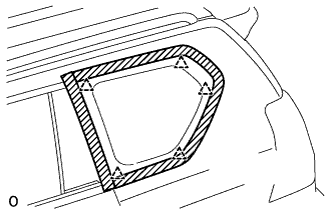
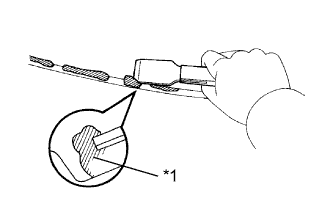
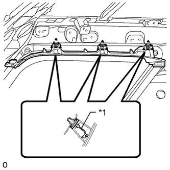

QUARTER WINDOW GLASS > INSTALLATION |
| 1. INSTALL QUARTER WINDOW ASSEMBLY LH |
 |
Using a brush or sponge, apply primer M to the exposed part of the vehicle body.
| *1 | Primer M |
| *2 | Adhesive |
| *a | CORRECT |
| *b | INCORRECT |
Using a brush or sponge, apply Primer G to the contact surface of the glass.
| *1 | Adhesive | - | |
| *a | Backside | *b | Adhesive Center Line |
| Area | Specified Condition |
| a | 7.0 mm (0.276 in.) |
| b | 8.0 mm (0.315 in.) |
| c | 6.5 mm (0.256 in.) |
Apply adhesive to the quarter window glass.
Cut off the tip of a cartridge nozzle as shown in the illustration.
| *1 | Adhesive | - | |
| *a | Backside | *b | Adhesive Center Line |
| Area | Specified Condition |
| a | 12.0 mm (0.472 in.) |
| b | 8.0 mm (0.315 in.) |
| c | 6.5 mm (0.256 in.) |
| Temperature | Usage Time Frame |
| 35°C (95°F) | 15 minutes |
| 20°C (68°F) | 1 hour 40 minutes |
| 5°C (41°F) | 8 hours |
Load a sealer gun with the cartridge.
Apply adhesive to the quarter window glass as shown in the illustration.
Install the quarter window glass to the vehicle body.
|  |
Attach the 4 clips to install the quarter window assembly LH.
Hold the quarter window glass in place securely with protective tape or equivalent until the adhesive hardens.
Lightly press the front surface of the glass to ensure a close fit.
|  |
Using a scraper, remove any excess or protruding adhesive.
| Temperature | Minimum Time Prior to Driving Vehicle |
| 35°C (95°F) | 1 hour 30 minutes |
| 20°C (68°F) | 5 hours |
| 5°C (41°F) | 24 hours |
| *1 | Adhesive |
| 2. CHECK FOR LEAK AND REPAIR |
Conduct a leak test after the adhesive has completely hardened.
Seal any leaks with auto glass sealer.
| 3. INSTALL NO. 1 ROOF SIDE RAIL GARNISH LH |
|  |
Install a new clip A to the roof side rail garnish.
| *1 | New Clip |
Attach the 3 clips to install the roof side rail garnish.
| 4. INSTALL ROOF HEADLINING ASSEMBLY |
Install the roof headlining assembly (Click here).